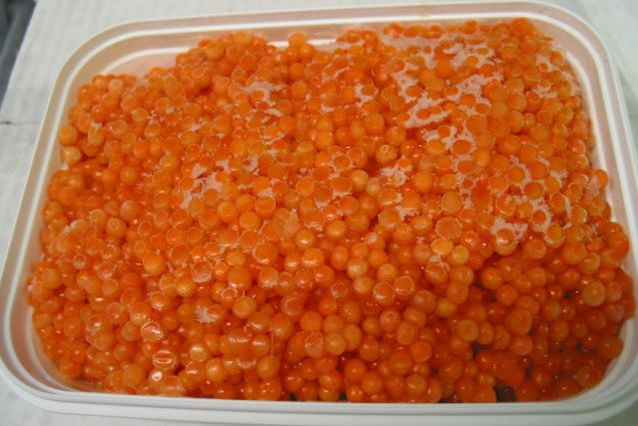

Красная, лососевая икра
II. Красная, лососевая икра
Имеет только одну, зернистую разновидность, но солится крепче черной и
практически обладает одинаковым стандартом вкуса. (Крупнее по размерам и
нежнее лишь икра зубатки.)
Икру лососевых (красную икру) приготовляют только зернистой.
Освобожденную от ястыков и пленок икру погружают в соляной раствор, в
котором выдерживают от 8 до 15 минут, дают стечь рассолу, добавляют
консерванты и упаковывают.
Красную икру часто называют кетовой, хотя самая лучшая икра не кеты, а горбуши. Вообще же красную икру получают из дальневосточных лососей (кеты, горбуши, чавычи, кижуча, нерки).
В отличие от зернистой икры осетровых лучшая красная зернистая
икра имеет наименьшее зерно. У высших сортов красной икры мелкое,
крепкое, неслипшееся («сухое») зерно яркого светло-оранжевого цвета, в
этой икре нет отстоя — продукта лопнувших икринок.
Используют красную икру для бутербродов, к блинам, в гарнирах.
Строго говоря, красную икру принято подавать так же, как и черную. Но
вольности здесь куда уместнее. Равно как и хлеб с маслом, блины, омлет,
белки вареных яиц, лимон, ну и, конечно, рис и водоросли, если речь идет
о суши. Все же вкус у икры лососевых попроще и порезче.
На фото красная икра:
1. Кетовая
Ярко-оранжевые крупные икринки (до 7 мм) с тонкой эластичной
пленкой. Считается самой вкусной из всех красных. В начале прошлого века
ее называли царской и экспортировали за границу.
2. Горбуши
Оранжевые и светло-оранжевые икринки средней величины (до 4,5 мм).
Легкая, почти незаметная горчинка во вкусе. Самая распространенная икра в
России.
3. Кижуча
Икринки темно-оранжевого цвета не больше 4 мм с заметной горчинкой в
послевкусии. Считается самой полезной благодаря уникальному витаминному
составу.
4. Нерки
Самые маленькие среди лососевых икринки темно-красного цвета. Икра
нерки имеет своеобразный рыбный вкус, который многим россиянам не по
нраву. Европейцы, напротив, считают ее самой деликатесно-пикантной.

Освобожденная от ястыков и замороженная лососевая икра - продукт для длительного хранения.
Иногда для упрощения транспортировки икру сразу после вылова
замораживают, а обрабатывают и фасуют позднее по мере возможности.
Заметим, что икра, расфасованная в банки после разморозки уже ни в коем
случае не может претендовать на ГОСТ.
Из лососевой икры делают японский деликатес: икру в ястыке
(естественной оболочке) обрабатывают путем соления и копчения дымом дуба
и ольхи. Вкус у такой обработанной икры удивительный, необычный внешний
вид – темно-красные пластины изогнутой формы, в которых каждая икринка
видна на свету.
Невозможно представить традиционные русские блины со сметаной
без столь же традиционной лососевой икры! Пожалуй, это самый лучший
вариант.
Легкие салаты с икрой тоже весьма изысканны.
Форелевая икра
Форель — общее название нескольких видов рыб, относящихся к семейству лососёвых, Salmonidae.
Вкус и вид. Икринки среднего размера, приятного золотистого или
розоватового цвета и солоноватого яркого аромата. Форелевая икра
несколько липкая, что впрочем, не особенно заметно, когда она подается
на канапе или бутербродах.
Подача и употребление. Поскольку форелевая икра достаточно
соленая, чтобы употреблять ее самостоятельно, она превосходно идет как
компонент в разнообразные блюда с добавлением сливочных продуктов:
сливочного сыра, кислых сливок и даже майонеза.